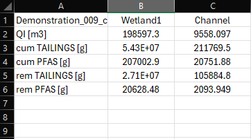

Appendix C — Files and data fields
Depending on the core supported configuration selected, TUFLOW CATCH outputs one or more files, each with their own data fields. If the recommended output protocols described in Chapter 6 are followed, then these are:
- TUFLOW HPC
- One *.xmdf with all catchment based results
- TUFLOW FV
- One *.nc for hydrodynamics and sediments
- One *.nc for water quality
- Possibly others (e.g. particle tracking)
Each of these files has any number of data fields, depending on the TUFLOW CATCH configuration, selected pollutants and water quality module settings. Notwithstanding this, the following will hold under the above output protocols:
- All TUFLOW CATCH map data fields will be contained within the TUFLOW HPC results file (*.xmdf)
- Receiving waterway hydrodynamic map data fields are those of standard TUFLOW FV outputs (*.nc)
- Receiving waterway water quality map data fields are those of standard TUFLOW FV WQ outputs (*.nc)
The outputs and data fields of the second two points above are not dealt with here because they are described in the TUFLOW FV Manuals and TUFLOW FV WQ Manual Appendices.
The first point above (TUFLOW CATCH data fields) is dealt with in this Appendix. Rather than attempt to list every potential data field that might be included in this output file, the attributes of the available data field types are presented. The names of these data fields will vary depending on pollutant names and other parameters, but each type follows a set naming convention. These data field types are:
- Surface water concentration
- Groundwater Layer concentration
- Dry mass
- Net mass
- Instantaneous volumetric flux entering a groundwater layer
- Time integrated volumetric flux entering a groundwater layer
- Instantaneous mass flux entering a groundwater layer
- Time integrated mass flux entering a groundwater layer
These are described in the following sections.
C.1 Surface water concentrations
Surface water concentration data fields have the following properties:
- Content:
- Reports the temporally and spatially varying concentration of a dissolved or particulate pollutant in surface water
- Name:
- “Conc <pollutant_name>”, e.g. “Conc WQ_NITRATE_MG_L”
- Units:
- See Section 4.5.3.3.3 and Table 4.1, “Map output concentration” column
These fields are reported at all wet TUFLOW HPC cells for all simulated constituents that are listed within pollutant export material blocks. Constant and timeseries pollutants are not reported because they are assigned only during boundary condition writing, rather than being numerically simulated in the catchment domain.
C.2 Groundwater concentrations
Groundwater concentration data fields have the following properties:
- Content:
- Reports the temporally and spatially varying concentration of a dissolved or particulate pollutant in groundwater associated with soil layer N (N = 1, 2, …)
- Name:
- “GW Layer <Layer number> Conc <pollutant_name>”, e.g. “GW Layer 1 Conc PFAS”
- Units:
- See Section 4.5.3.3.3 and Table 4.1, “Map output concentration” column
These fields are reported at all TUFLOW HPC cells for all simulated constituents that are listed within pollutant export material blocks. Constant and timeseries pollutants are not reported because they are assigned only during boundary condition writing, rather than being simulated in the catchment domain. These GW Layer data fields will be zero at all times and locations for a given pollutant <name> if its infiltration has been set to off via
Infiltration <name> == OFF
C.3 Dry mass
Dry mass data fields are created and reported only for pollutants that are set to use the Washoff1 pollutant export model. They have the following properties:
- Content:
- Reports the temporally and spatially varying dry mass of accumulated pollutant. It is initialised to zero at simulation commencement
- Name:
- “Dry Mass <pollutant_name>”, e.g. “Dry Mass WQ_POC_MG_L”
- Units:
- See Section 4.5.3.3.3 and Table 4.2, “Dry store mass” column
These fields are reported at all TUFLOW HPC cells for all simulated constituents that are listed within pollutant export material blocks and use the Washoff1 pollutant export model. Constant and timeseries pollutants are not reported because they are assigned only during boundary condition writing, rather than being simulated in the catchment domain. Multiplying each pollutant’s Dry Mass outputs by the TUFLOW HPC cell area (in hectares) and summing across the domain will compute the total dry store mass of each pollutant (in kilograms) as a function of time.
C.4 Net mass
Net mass data fields are created and reported only for pollutants that are set to use the Shear1 pollutant export model. They have the following properties:
- Content:
- Reports the temporally and spatially varying net mass of a pollutant. It is initialised to zero at simulation commencement. A negative/positive number at a given location reflects net erosion/deposition, respectively
- Name:
- “Net Mass <pollutant_name>”, e.g. “Net Mass WQ_SED_FINES”
- Units:
- See Section 4.5.3.3.3 and Table 4.2, “Net mass” column
These fields are reported at all TUFLOW HPC cells for all simulated constituents that are listed within pollutant export material blocks and use the Shear1 pollutant export model. Constant and timeseries pollutants are not reported because they are assigned only during boundary condition writing, rather than being simulated in the catchment domain. Dividing each pollutant’s Net Mass outputs by a user defined bulk density, and then again dividing by 10000 (i.e. m\(^2\)/ha) will compute the erosion or deposition depth of each pollutant as a function of space and time.
C.5 Instantaneous volumetric flux entering a groundwater layer
The instantaneous volumetric flux entering a groundwater layer from above has the following properties:
- Content:
- Reports the temporally and spatially varying instantaneous flux of water entering a groundwater layer from above
- Name:
- “GW QZ Layer <Layer number>”, e.g. “GW QZ Layer 4”
- Units:
- Cubic meters per second
Depending on model configuration, these fluxes may be ‘noisy’ given their instantaneous calculation. Time integrated equivalent quantities are therefore additionally provided (see Section C.6). One field is produced for each groundwater layer, and labelled ‘…Layer X’, where X is the layer number.
Note: Since the 2026.0.0 TUFLOW CATCH release, output groundwater fluxes in discharges and volumes are normalised to a unit area by default. See GW Z Flux Output Normalise.
C.6 Time integrated volumetric flux entering a groundwater layer
The time integrated volumetric flux entering a groundwater layer has the following properties:
- Content:
- Reports the temporally and spatially varying time integrated flux of water entering a groundwater layer from above. This can be interpreted as the cumulative volume of water entering a groundwater layer since simulation commencement
- Name:
- “GW QZI Layer <Layer number>”, e.g. “GW QZI Layer 1”
- Units:
- Cubic meters
One field is produced for each groundwater layer, and labelled ‘…Layer X’, where X is the layer number.
Note: Since the 2026.0.0 TUFLOW CATCH release, output groundwater fluxes in discharges and volumes are normalised to a unit area by default. See GW Z Flux Output Normalise.
C.7 Instantaneous mass flux entering a groundwater layer
The instantaneous mass flux entering a groundwater layer from above has the following properties:
- Content:
- Reports the temporally and spatially varying instantaneous flux of pollutant mass entering a groundwater layer from above
- Name:
- “GW Layer <Layer number> MZ <pollutant_name>”, e.g. “GW Layer 2 MZ SED_FINES”
- Units:
- See Section 4.5.3.3.3 and Table 4.1, “Map output concentration” column. These units are multiplied by cubic meters per second and reported in this MZ layer
Depending on model configuration, these fluxes may be ‘noisy’ given their instantaneous calculation. Time integrated equivalent quantities are therefore additionally provided (see Section C.8). One field is produced for each groundwater layer, and labelled ‘…Layer X’, where X is the layer number.
C.8 Time integrated mass flux entering a groundwater layer
The time integrated mass flux entering a groundwater layer has the following properties:
- Content:
- Reports the temporally and spatially varying time integrated flux of pollutant mass entering a groundwater layer from above. This can be interpreted as the cumulative mass of pollutant entering a groundwater layer since simulation commencement
- Name:
- “GW Layer <Layer number> MZI <pollutant_name>”, e.g. “GW Layer 3 MZI PFAS”
- Units:
- See Section 4.5.3.3.3 and Table 4.1, “Map output concentration” column. These units are multiplied by cubic meters and reported in this MZI layer
One field is produced for each groundwater layer, and labelled ‘…Layer X’, where X is the layer number.
C.9 Other outputs
TUFLOW CATCH produces a small suite of supporting outputs that are simple text files. These are listed below. If the TUFLOW CATCH BC output folder is set to ..\bc_dase as recommended:
Catch BC Output Folder == ..\bc_dbase
then all files below are written to the TUFLOWCATCH\bc_dbase\ folder.
C.9.1 Mass balance
A series of three mass balance files are written as follows (assuming a *.tcc file name of Model_001.tcc).
C.9.1.1 Surface water mass balance
One file per simulation is produced as follows:
- Content:
- Timeseries of spatially summed cumulative surface water flow and associated pollutant masses leaving the TUFLOW HPC model (either to a polygon (Pollutant Export TUFLOW CATCH configuration) or TUFLOW FV model domain (Hydrology and Integrated TUFLOW CATCH configurations))
- Name:
- Model_001_catchment_hydraulic_mass_balance_surface.csv
- Units:
- Time: ISODATE format
- Volume: m\(^3\) (cumulative)
- All pollutants: See Section 4.5.3.3.3 and Table 4.1, “Mass balance mass” column (cumulative mass, not reported for Hydrology configuration as pollutants are not simulated)
- Uses
- Can be directly imported into common plotting packages to show total surface cumulative flow and pollutant mass export at the outlet of the TUFLOW HPC model domain (or, equally, entry to the TUFLOW FV domain if used)
- Provides an accessible means of high level scenario comparisons, for example where cumulative surface catchment flows and pollutants loads are to be compared between different catchment land use options, management interventions or rainfall sequences
C.9.1.2 Groundwater mass balance
One file per simulation is produced as follows:
- Content:
- Timeseries of spatially summed cumulative groundwater flow and associated pollutant masses leaving the TUFLOW HPC model (either to a polygon (Pollutant Export TUFLOW CATCH configuration) or TUFLOW FV model domain (Hydrology and Integrated TUFLOW CATCH configurations))
- Name:
- Model_001_catchment_hydraulic_mass_balance_groundwater.csv
- Units:
- Time: ISODATE format
- Volume: m\(^3\) (cumulative)
- All pollutants: See Section 4.5.3.3.3 and Table 4.1, “Mass balance mass” column (cumulative mass, not reported for Hydrology configuration as pollutants are not simulated)
- Uses
- Can be directly imported into common plotting packages to show total groundwater cumulative flow and pollutant mass export at the outlet of the TUFLOW HPC model domain (or, equally, entry to the TUFLOW FV domain if used)
- Provides an accessible means of high level scenario comparisons, for example where cumulative groundwater catchment flows and pollutants loads are to be compared between different catchment land use options, management interventions or rainfall sequences
C.9.1.3 Total mass balance
One file per simulation is produced as follows. Its content is the summation of the data reported in the respective surface and groundwater mass balance outputs described in Section C.9.1.1 and Section C.9.1.2:
- Content:
- Timeseries of spatially summed cumulative surface and groundwater flow and associated pollutant masses combined leaving the TUFLOW HPC model (either to a polygon (Pollutant Export TUFLOW CATCH configuration) or TUFLOW FV model domain (Hydrology and Integrated TUFLOW CATCH configurations))
- Name:
- Model_001_catchment_hydraulic_mass_balance.csv
- Units:
- Time: ISODATE format
- Volume: m\(^3\) (cumulative)
- All pollutants: See Section 4.5.3.3.3 and Table 4.1, “Mass balance mass” column (cumulative mass, not reported for Hydrology configuration as pollutants are not simulated)
- Uses
- Can be directly imported into common plotting packages to show cumulative total flow and pollutant mass export at the outlet of the TUFLOW HPC model domain (or, equally, entry to the TUFLOW FV domain if used)
- Provides an accessible means of high level scenario comparisons, for example where cumulative total catchment flows and pollutants loads are to be compared between different catchment land use options, management interventions or rainfall sequences
C.9.2 Receiving polygon
If TUFLOW CATCH has been executed in the Pollutant Export configuration, then a timeseries output file is produced that reports incoming flow and concentrations to that user defined polygon. This is broadly a concentration based equivalent to the output described in Section C.9.1.3, with some extra fields reported.
Assuming a *.tcc file name of Model_001.tcc has been executed, the file is as follows:
- Content:
- Timeseries of spatially summed instantaneous surface and groundwater flow and associated pollutant concentrations combined leaving the TUFLOW HPC model to a polygon (Pollutant Export TUFLOW CATCH configuration)
- Name:
- Model_001_catchment_hydraulic_receiving.csv
- Units:
- Time: ISODATE format
- Flow: m\(^3\)/s
- All pollutants: See Section 4.5.3.3.3 and Table 4.1, “Receiving polygon concentration” column
- Uses
- Can be directly imported into common plotting packages to show instantaneous total flow and pollutant concentrations at the outlet of the TUFLOW HPC model domain
- Provides an accessible means of high level scenario comparisons, for example where total catchment flows and pollutants concentrations are to be compared between different catchment land use options, management interventions or rainfall sequences
C.9.3 TUFLOW FV boundaries
A series of TUFLOW FV boundary related files are written as follows.
C.9.3.1 BC blocks
A single file that contains all required TUFLOW FV nodestring (Q) and cell (QC) inflow boundary BC blocks is written by TUFLOW CATCH. This file is called automatically by TUFLOW FV under TUFLOW CATCH when required. It is at the heart of the automated linking offered by TUFLOW CATCH. Users should not edit this file in any way.
- Content:
TUFLOW FV BC blocks that direct TUFLOW FV to boundary condition data files prepared by TUFLOW HPC under TUFLOW CATCH. Only produced in the Hydrology and Integrated TUFLOW CATCH configurations. Two example blocks are shown below
! Nodestring boundaries
BC == Q, NW_Inflow, NW_Inflow.csv
Sub-Type == 2
BC Header == Time,Flow,Salinity,Temperature,SED_FINES
End BC
! Lateral boundaries
BC == QC, 1178572.028, 4996161.397, cell1.csv
BC Header == Time,Flow,Salinity,Temperature,SED_FINES
End BC
- Name:
- Model_001_catchment_hydraulic.fvcatchbc
- Units:
- NA
- Uses
- Used internally by TUFLOW CATCH to link TUFLOW HPC and TUFLOW FV simulations. Users should not edit this file in any way
This file calls underlying nodestring and/or lateral boundary condition data files produced by TUFLOW HPC, and these are described below.
C.9.3.2 Nodestring boundary data
If TUFLOW CATCH has been executed in the Hydrology or Integrated configuration and TUFLOW FV nodestrings have been specified as catchment inflows via
Catchment BC Nodestring == <path to GIS nodestring file>
then individual data files are produced for each nodestring boundary:
- Content:
- Timeseries of flow and associated pollutant concentrations crossing the nodestring
- Name:
- “<GIS name>.csv”, e.g. “SW_Inflow.csv”, where “SW_Inflow” is the user defined name given to the nodestring in GIS
- Units:
- Time: ISODATE format
- Flow: m\(^3\)/s
- All pollutants: See Section 4.5.3.3.3 and Table 4.1, “TUFLOW FV BC concentration” column
- Uses
- Called by Model_001_catchment_hydraulic.fvcatchbc to link TUFLOW HPC and TUFLOW FV under TUFLOW CATCH. Users should not edit this file in any way, including opening and saving it in Excel, which can cause the time format to change and become unreadable.
C.9.3.3 Lateral boundary data
If TUFLOW CATCH has been executed in the Hydrology or Integrated configuration then individual lateral data files are produced for each transfer cell boundary:
- Content:
- Timeseries of flow and associated pollutant concentrations entering a cell
- Name:
- “cell_<TUFLOW mesh cell ID>.csv”, e.g. “cell37.csv”, where 37 is the 2D cell ID in the TUFLOW FV mesh
- Units:
- Time: ISODATE format
- Flow: m\(^3\)/s
- All pollutants: See Section 4.5.3.3.3 and Table 4.1, “TUFLOW FV BC concentration” column
- Uses
- Called by Model_001_catchment_hydraulic.fvcatchbc to link TUFLOW HPC and TUFLOW FV under TUFLOW CATCH. Users should not edit this file in any way, including opening and saving it in Excel, which can cause the time format to change and become unreadable.
C.9.3.4 Intervention summary
If TUFLOW CATCH has been executed in the Pollutant Export or Integrated configuration and with interventions included, then a csv file is produced:
- Content:
- Final cumulative: flows, masses entering and masses removed for all intervention devices and pollutants
- Name:
- “Model_001_catchment_hydraulic_intervention_summary.csv”, in the user specified results folder (assuming “Model_001” is the simulation name)
- Columns:
- Headers
- “QI” cumulative flow
- “cum <pollutant_1_name>” cumulative mass entering device
- “cum <pollutant_2_name>” cumulative mass entering device
- “cum <pollutant_…_name>” cumulative mass entering device
- “cum <pollutant_X_name>” cumulative mass entering device
- “rem <pollutant_1_name>” cumulative mass removed by device
- “rem <pollutant_2_name>” cumulative mass removed by device
- “rem <pollutant_…_name>” cumulative mass removed by device
- “rem <pollutant_X_name>” cumulative mass removed by device
- <device_1_name>
- <device_2_name>
- <device_…_name>
- <device_X_name>
- Headers

- Units:
- Flow: m\(^3\)
- cum mass: grams (see Section 4.5.3.5.3 and command Units)
- rem mass: grams (see Section 4.5.3.5.3 and command Units)
- Uses
- Interrogating pollutant masses removed by intervention devices and therefore the predicted device efficiency, per pollutant. Can also be used in mass balance calculations. When a table is used for specifying removal efficiency then the quotient of removed to entering cumulative masses provides a mean removal rate. It can be verified that this quotient equals the user specified \(R_j\) if Eqn == Constant is deployed